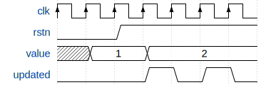
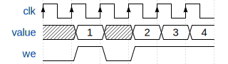
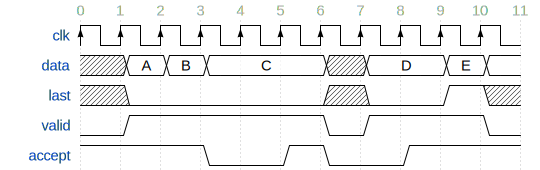
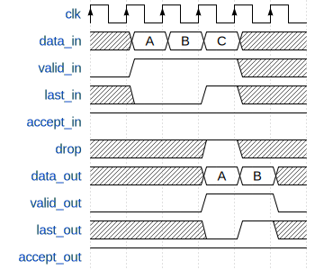
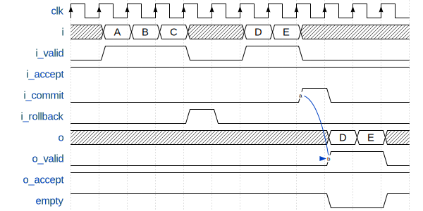
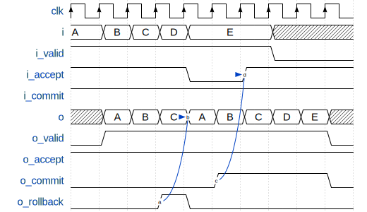

VHDL
The generated VHDL entity for a store contains the following:
All variables of the store (functions are not supported).
Every variable is available at its own port (parallel interface).
Depending on how the access variable is set, a variable is read-only, write-only, read-write, or not available.
An AXI4 LITE slave interface allows accessing all variables that are at most 4 bytes in size.
Synchronizer implementation is integrated.
Multiple stores can be chained to pass Synchronizer messages over the same protocol stack.
Store entity
- Store_hdl
The generated stores have the following entity definition (for the ExampleFpga store in this case):
entity ExampleFpga_hdl is generic ( SYSTEM_CLK_FREQ : integer := 100e6; SYNC_OUT_INTERVAL_s : real := 0.1; ID : natural := 0; AXI_SLAVE : boolean := true; BUFFER_AFTER_N_VARS : positive := 4; VAR_ACCESS : ExampleFpga_pkg.var_access_t := ExampleFpga_pkg.VAR_ACCESS_RW; SIMULATION : boolean := false ); port ( clk : in std_logic; rstn : in std_logic; var_out : out ExampleFpga_pkg.var_out_t; var_in : in ExampleFpga_pkg.var_in_t := ExampleFpga_pkg.var_in_default; sync_in : in msg_t := msg_term; sync_out : out msg_t; sync_id : out unsigned(15 downto 0); sync_chained_id : in unsigned(15 downto 0) := (others => '0'); sync_chained_in : in msg_t := msg_term; sync_chained_out : out msg_t; sync_out_trigger : in std_logic := '0'; sync_out_hold : in std_logic := '0'; sync_out_irq : out std_logic; sync_out_have_changes : out std_logic; sync_connected : out std_logic; sync_in_busy : out std_logic; s_axi_araddr : in std_logic_vector(31 downto 0) := (others => '-'); s_axi_arready : out std_logic; s_axi_arvalid : in std_logic := '0'; s_axi_awaddr : in std_logic_vector(31 downto 0) := (others => '-'); s_axi_awready : out std_logic; s_axi_awvalid : in std_logic := '0'; s_axi_bready : in std_logic := '0'; s_axi_bresp : out std_logic_vector(1 downto 0); s_axi_bvalid : out std_logic; s_axi_rdata : out std_logic_vector(31 downto 0); s_axi_rready : in std_logic := '0'; s_axi_rresp : out std_logic_vector(1 downto 0); s_axi_rvalid : out std_logic; s_axi_wdata : in std_logic_vector(31 downto 0) := (others => '-'); s_axi_wready : out std_logic; s_axi_wvalid : in std_logic := '0' ); end ExampleFpga_hdl;
- SYSTEM_CLK_FREQinteger := 100e6
Clock frequency of
clk.- SYNC_OUT_INTERVAL_sreal := 0.1
Interval to send out Synchronizer messages.
- IDnatural := 0
The ID used for Hello messages. If 0, the value is automatically determined.
- AXI_SLAVEboolean := true
Enable the AXI slave interface when set to
true.- BUFFER_AFTER_N_VARSpositive := 4
Inject buffers after the given number of variables. A lower number increases the latency of handling sync messages, but reduces the combinatorial path length.
- VAR_ACCESSExampleFpga_pkg.var_access_t := ExampleFpga_pkg.VAR_ACCESS_RW
Allowed access of the variables within the store. The default, all read-write, is the most generic, but has the highest resource usage.
To override only a few access settings, assign a function to
VAR_ACCESS, with an implementation like this:function var_access return ExampleFpga_pkg.var_access_t is variable v : ExampleFpga_pkg.var_access_t; begin v := ExampleFpga_pkg.VAR_ACCESS_RW; v.\t_clk\ := ACCESS_WO; v.\default_register_write_count\ := ACCESS_WO; return v; end function;
See also var_access_t.
- SIMULATIONboolean := false
When
true, reduce the sync timing, such that the interval is better suitable for (slow) simulation.- clkin std_logic;
System clock.
- rstnin std_logic;
Low-active reset.
- var_outout ExampleFpga_pkg.var_out_t
All variables within the store. See var_out_t for a description and timing.
- var_inin ExampleFpga_pkg.var_in_t := ExampleFpga_pkg.var_in_default
Interface to write variables. See var_in_t for a description and timing.
- sync_inin msg_t := msg_term
Synchronization input. Connect
sync_inandsync_outto the protocol stack. Set tomsg_termto disable synchronization.- sync_outout msg_t
Synchronization output. Connect
sync_inandsync_outto the protocol stack.- sync_idout unsigned(15 downto 0)
The used ID for the Hello message. This equals
IDwhenIDis non-zero. Otherwise, a non-zero value is determined. The value should be constant.- sync_chained_idin unsigned(15 downto 0) := (others => ‘0’)
The
sync_idof the chained store. IfIDis zero, a non-conflicting value is chosen for this store’ssync_id.- sync_chained_inin msg_t := msg_term
The
sync_outof a chained store.- sync_chained_outout msg_t
The
sync_inof a chained store.- sync_out_triggerin std_logic := ‘0’
Trigger an immediate sequence of Synchronizer messages when set to high for one clock cycle. When kept high, multiple sync sequences can be sent back to back.
- sync_out_holdin std_logic := ‘0’
When high, prevent automatically sending out Synchronizer messages.
- sync_out_irqout std_logic
Interrupt flag that indicates that there is at least one Synchronizer message to be passed over
sync_out.- sync_out_have_changesout std_logic
Flag that indicates that a variable has been changed in the store, and Synchronization is required. Either flag
sync_out_trigger, or wait tillSYNC_OUT_INTERVAL_shas passed and synchronization is started.- sync_connectedout std_logic
Flag that indicates that we have a connection with a remote Synchronizer instance.
- sync_in_busyout std_logic
Flag that is high when Synchronizer messages are being processed.
- s_axi_*
AXI4 LITE slave interface. This is a read-write interface for all store variables that are at most 32-bit in size.
Store package
- Store_pkg
The generated package includes all store-specific settings, like initialization values, and types to make handling all store variables easier. The following items are most interesting:
- type var_out_t
This is a record with all variables. This is the output of the store, with current data, and a flag that indicates when data has changed. The fields in the record are generated based on the names in the store. Check the generated package file to see how these names are translated. The record for a store with only one
uint32variable could look like this:subtype \some_variable__type\ is unsigned(31 downto 0); type \blob__out_t\ is record value : \some_variable__type\; updated : std_logic; end record; type var_out_t is record \some_variable\ : \some_variable__out_t\; end record;
The output timing is exemplified below.
During reset, the initial value is set at the output, 1 in this example. When the value is written, via
var_in, the AXI interface, or via the Synchronizer,valueis updated andupdatedis flagged for one clock cycle. The flag is set at every write, not only when the data changes. The example above shows such case when the value 2 is set again.When multiple variables are updated in one Synchronizer message, all of these variables flag the
updatedflag at the same time. The latency between writing a variable and when it is on thevar_outport is unspecified.The value is undefined when the access of a variable is
ACCESS_WOorACCESS_NA.
- type var_in_t
This is a record with all variables. This is the input of the store, which can be used to write to variables. Writes are only accepted if the access of a variable is
ACCESS_RWorACCESS_WO.Variables can be updated in three ways: via the
var_inport, via the AXI interface, and via the Synchronizer. If writes happen at the same time, the priority is in the same order. So, writes viavar_inalways override other writes at the same time.The record for a store with only one
uint32variable could look like this:subtype \some_variable__type\ is unsigned(31 downto 0); type \some_variable__in_t\ is record value : \some_variable__type\; we : std_logic; end record; type var_in_t is record \some_variable\ : \some_variable__in_t\; end record;
When
weis high, thevalueis written to the store.In this example, the variable is set to 1 in the second cycle. Consider the case that a microcontroller and the FPGA synchronize a store. If a variable should be read-only for the microcontroller,
wecan be tied high by the FPGA, such that the FPGA updates the variable constantly. In this case, the FPGA effectively forces the value in the store asvalue. The Synchronizer will send a stream of updates to the microcontroller of these values. The example above shows forcing the value to 2, 3, and 4 in consecutive cycles.
- type var_access_t
This record contains all variables, with its access specifier. For example:
type var_access_t is record \some_variable\: libstored_pkg.access_t; end record;
See also :ref:
access_t <access_t>.- constant VAR_ACCESS_RWvar_access_t
Set all variables in the store to
ACCESS_RW.- constant VAR_ACCESS_ROvar_access_t
Set all variables in the store to
ACCESS_RO.- constant VAR_ACCESS_WOvar_access_t
Set all variables in the store to
ACCESS_WO.- constant VAR_ACCESS_NAvar_access_t
Set all variables in the store to
ACCESS_NA.- function merge(constant a, bvar_in_t) return var_in_t
Merge two
var_insignals into a single value, such that two sources of variables can be fed into the store. If bothaandbsetwefor the same variable,ahas priority and the value ofbis ignored (there is no backpressure in place).
Common package
- libstored_pkg
- type access_t
This specifies the access type of a variable:
type access_t is (ACCESS_RW, ACCESS_RO, ACCESS_WO, ACCESS_NA);
- ACCESS_RW
A variable can be read and written by the FPGA, and is synchronized in both directions.
- ACCESS_RO
A variable can be read by the FPGA. Writes are ignored. Synchronization is accepted, but not generated.
- ACCESS_WO
A variable can be read and written by the FPGA. However, Synchronizer messages are generated, but not accepted.
- ACCESS_NA
The variable cannot be accessed by the FPGA. Synchronizer messages are ignored.
- type msg_t
This record holds all signals relevant to passing messages between protocol layers.
type msg_t is record data : std_logic_vector(7 downto 0); last : std_logic; valid : std_logic; accept : std_logic; end record;
- constant msg_termmsg_t
A constant that can be used as
msg_tsequence terminator. All messages that reach the terminator, are accepted and dropped.
Protocol
The protocol stack can be built by chaining these components using two msg_t signals.
All layers have a similar interface:
- Generic layer
entity SomeLayer is port ( clk : in std_logic; rstn : in std_logic; encode_in : in libstored_pkg.msg_t; encode_out : out libstored_pkg.msg_t; decode_in : in libstored_pkg.msg_t; decode_out : out libstored_pkg.msg_t; idle : out std_logic ); end SomeLayer;
- encode_in
This holds data to be encoded from the store towards the hardware infrastructure.
- encode_out
This is
encode_inencoded by this layer, and to be encoded by a lower layer in the stack.- decode_in
The data received from a lower layer in the stack.
- decode_out
The
decode_indata, process by this layer, to be passed to a higher layer in the stack.- idle
A flag that indicates that this layer is currently doing nothing.
Passing messages follows this scheme, which is resembles the AXI4-Stream Protocol:
datais accepted whenvalidandacceptare high at the same clock edge. In the example above, this happens at edge 2, 3, 6, 9, and 10. There is no order or dependency invalidandaccept; both can be high while other is not, indicating ‘there is data’, or ‘the data can be accepted, if any’, respectively.A message consists of a sequence of data bytes.
lastsignals the end of the current message. It depends on the protocol layer if and how this is handled.encode_inanddecode_outform the pair that connect to a higher layer,encode_outanddecode_inis a pair to a lower layer. Theacceptsignal is in the reverse direction as the others. To ease integration,acceptis in the counterpart of the pair; sodecode_out.acceptbelongs toencode_in.valid, andencode_in.acceptbelongs todecode_out.valid. Forencode_outanddecode_in, the same applies.
AsciiEscapeLayer
- AsciiEscapeLayer
VHDL counterpart of
stored::AsciiEscapeLayer.entity AsciiEscapeLayer is generic ( ESCAPE_ALL : boolean := false; ENCODE_OUT_FIFO_DEPTH : natural := 0; DECODE_OUT_FIFO_DEPTH : natural := 0 ); port ( clk : in std_logic; rstn : in std_logic; encode_in : in libstored_pkg.msg_t; encode_out : out libstored_pkg.msg_t; decode_in : in libstored_pkg.msg_t; decode_out : out libstored_pkg.msg_t; idle : out std_logic ); end AsciiEscapeLayer;
- ESCAPE_ALLboolean := false
When
true, escape all ASCII control characters, otherwise only the subset that conflict with other protocol layers.- ENCODE_OUT_FIFO_DEPTHnatural := 0
The minimum FIFO size to be inserted before
encode_out. Set to 0 to allow pass-through.- DECODE_OUT_FIFO_DEPTHnatural := 0
The minimum FIFO size to be inserted before
decode_out. Set to 0 to allow pass-through.
BufferLayer
- BufferLayer
Buffer messages in a FIFO.
entity BufferLayer is generic ( ENCODE_DEPTH : natural := 1; DECODE_DEPTH : natural := 1 ); port ( clk : in std_logic; rstn : in std_logic; encode_in : in libstored_pkg.msg_t := libstored_pkg.msg_term; encode_out : out libstored_pkg.msg_t; decode_in : in libstored_pkg.msg_t := libstored_pkg.msg_term; decode_out : out libstored_pkg.msg_t; idle : out std_logic ); end BufferLayer;
- ENCODE_DEPTHnatural := 1
The minimum FIFO size in the encode path.
- DECODE_DEPTHnatural := 1
The minimum FIFO size in the decode path.
TerminalLayer
- TerminalLayer
VHDL counterpart of
stored::TerminalLayer.entity TerminalLayer is generic ( ENCODE_OUT_FIFO_DEPTH : natural := 0; DECODE_IN_FIFO_DEPTH : natural := 0; DECODE_OUT_FIFO_DEPTH : natural := 1; TERMINAL_OUT_FIFO_DEPTH : natural := 1 ); port ( clk : in std_logic; rstn : in std_logic; encode_in : in libstored_pkg.msg_t; encode_out : out libstored_pkg.msg_t; decode_in : in libstored_pkg.msg_t; decode_out : out libstored_pkg.msg_t; terminal_in : in libstored_pkg.msg_t := libstored_pkg.msg_term; terminal_out : out libstored_pkg.msg_t; idle : out std_logic ); end TerminalLayer;
- ENCODE_OUT_FIFO_DEPTHnatural := 0
The minimum FIFO size to be inserted before
encode_out. Set to 0 to allow pass-through.- DECODE_IN_FIFO_DEPTHnatural := 0
The minimum FIFO size to be inserted after
decode_in. Set to 0 to allow pass-through.- DECODE_OUT_FIFO_DEPTHnatural := 1
The minimum FIFO size to be inserted before
decode_out. Set to 0 to allow pass-through.- TERMINAL_OUT_FIFO_DEPTHnatural := 1
The minimum FIFO size to be inserted before
terminal_out. Set to 0 to allow pass-through.
UARTLayer
- UARTLayer
UART end of the protocol stack, with optional RTS/CTS hardware flow control.
entity UARTLayer is generic ( SYSTEM_CLK_FREQ : integer := 100e6; BAUD : integer := 115200; DECODE_OUT_FIFO_DEPTH : natural := 0 ); port ( clk : in std_logic; rstn : in std_logic; encode_in : in libstored_pkg.msg_t; decode_out : out libstored_pkg.msg_t; rx : in std_logic; tx : out std_logic; cts : in std_logic := '0'; rts : out std_logic; idle : out std_logic ); end UARTLayer;
- SYSTEM_CLK_FREQinteger := 100e6
Frequency of
clk.- BAUDinteger := 115200
Baud rate to be used for
rxandtx.- DECODE_OUT_FIFO_DEPTHnatural := 0
The minimum FIFO size to be inserted before
decode_out.
FileLayer
- FileLayer
File backend of the protocol stack. Only available for simulation.
entity FileLayer is generic ( SLEEP_s : real := 100.0e-6; FILENAME_IN : string := "stack_in.txt"; FILENAME_OUT : string := "stack_out.txt"; VERBOSE : boolean := false ); port ( clk : in std_logic; rstn : in std_logic; encode_in : in libstored_pkg.msg_t; decode_out : out libstored_pkg.msg_t; idle : out std_logic ); end FileLayer;
- SLEEP_sreal := 100.0e-6
Do a
wait for SLEEP_s * 1 secwhen anulbyte is received. This way, the simulation does not block all the time on input data. Some throttling can be implemented this way.- FILENAME_INstring := “stack_in.txt”
File to read from. This can also be a named pipe.
- FILENAME_OUTstring := “stack_out.txt”
File to write to. This can also be a named pipe.
- VERBOSEboolean := false
If
true, report every read/write to the log.
TeeLayer
- TeeLayer
Write all encoded and/or decoded data to a file, like the UNIX tool
tee. Only available for simulation.entity TeeLayer is generic ( FILENAME_ENCODE : string := ""; FILENAME_DECODE : string := "" ); port ( clk : in std_logic; rstn : in std_logic; encode_in : in libstored_pkg.msg_t; encode_out : out libstored_pkg.msg_t; decode_in : in libstored_pkg.msg_t; decode_out : out libstored_pkg.msg_t; idle : out std_logic ); end TeeLayer;
- FILENAME_ENCODEstring := “”
File name to write encoded data to. Only used when not empty.
- FILENAME_DECODEstring := “”
File name to write decoded data to. Only used when not empty.
XsimLayer
- XsimLayer
VHDL counterpart of
stored::XsimLayer. Only available in simulation.entity XsimLayer is generic ( PIPE_PREFIX : string; VERBOSE : boolean := false ); port ( clk : in std_logic; rstn : in std_logic; encode_in : in libstored_pkg.msg_t; decode_out : out libstored_pkg.msg_t; idle : out std_logic ); end XsimLayer;
- PIPE_PREFIXstring
Prefix used for the three named pipes.
- VERBOSEboolean := false
When
true, show detailed information about all exchanged bytes.
Utilities
libstored_droptail
- libstored_droptail
Drop the tail with a fixed length from a message.
entity libstored_droptail is generic ( FIFO_DEPTH : natural := 0; TAIL_LENGTH : positive := 1 ); port ( clk : in std_logic; rstn : in std_logic; data_in : in std_logic_vector(7 downto 0); valid_in : in std_logic; last_in : in std_logic; accept_in : out std_logic; drop : in std_logic := '1'; data_out : out std_logic_vector(7 downto 0); valid_out : out std_logic; last_out : out std_logic; accept_out : in std_logic ); end libstored_droptail;
Example that drops a tail of length 1:
Note that the precise latency from
data_intodata_outis unspecified.- FIFO_DEPTHnatural := 0
Minimum FIFO depth. Set to 0 to allow pass-through.
- TAIL_LENGTHpositive := 1
The tail to be dropped.
- dropin std_logic
This signal is sampled when
last_inis high. Whendropis high, the tail of the message is dropped. So,last_outis moved a bit back in the stream in that case.
libstored_stream_buffer
- libstored_stream_buffer
Break long combinatorial path by inserting flipflops. This is effectively a FIFO of size 1.
entity libstored_stream_buffer is generic ( WIDTH : positive ); port ( clk : in std_logic; rstn : in std_logic; i : in std_logic_vector(WIDTH - 1 downto 0); i_valid : in std_logic; i_accept : out std_logic; o : out std_logic_vector(WIDTH - 1 downto 0); o_valid : out std_logic; o_accept : in std_logic ); end libstored_stream_buffer;
libstored_fifo
- libstored_fifo
FIFO with optional conditional push, and lookahead before actual pop.
entity libstored_fifo is generic ( WIDTH : positive; DEPTH : natural := 1; ALMOST_FULL_REMAINING : natural := 0; ALMOST_EMPTY_REMAINING : natural := 0 ); port ( clk : in std_logic; rstn : in std_logic; i : in std_logic_vector(WIDTH - 1 downto 0); i_valid : in std_logic; i_accept : out std_logic; i_commit : in std_logic := '1'; i_rollback : in std_logic := '0'; o : out std_logic_vector(WIDTH - 1 downto 0); o_valid : out std_logic; o_accept : in std_logic; o_commit : in std_logic := '1'; o_rollback : in std_logic := '0'; full : out std_logic; empty : out std_logic; almost_full : out std_logic; almost_empty : out std_logic ); end libstored_fifo;
Example to drop and commit pushed data:
Example to drop and commit popped data having a FIFO size of 4:
- WIDTHpositive
Data width.
- DEPTHnatural := 1
Minimum FIFO depth.
- ALMOST_FULL_REMAININGnatural := 0
Set
almost_fullhigh when at most this number of elements can be pushed in the FIFO without blocking.- ALMOST_EMPTY_REMAININGnatural := 0
Set
almost_emptyhigh when at most this number of elements can be popped from the FIFO without blocking.- i_commitin std_logic := ‘1’
When high, make the already pushed data aviable for the consumer side. Data that is pushed in the same clock cycle is also committed.
- i_rollbackin std_logic := ‘0’
Drop all previously uncommitted data. Data that is pushed in the same clock cycle is also dropped. If
i_commitis high in the same cycle, it is ignored, and the data is dropped.- o_commitin std_logic := ‘1’
Remove previously popped data from the FIFO, such that space is made for the producer side to push more.
- o_rollbackin std_logic := ‘0’
Revert previously uncommited popped data, such that this data can be read again.